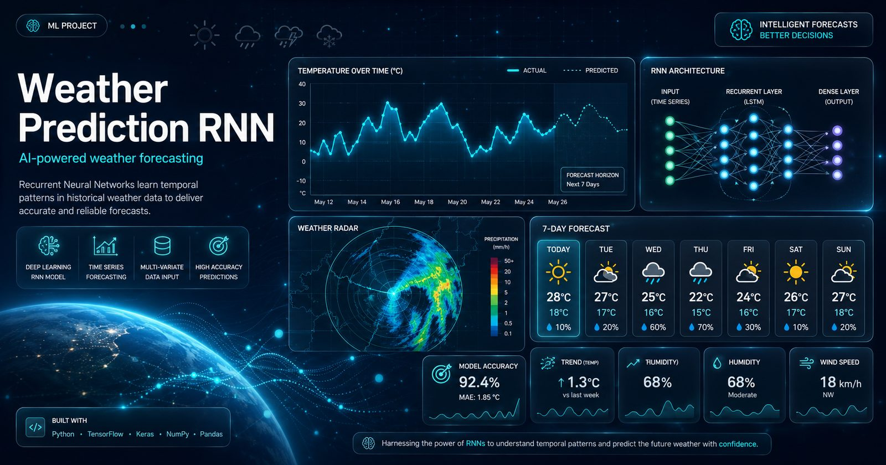

Project documentation — Index 04
Weather Prediction RNN
A recurrent neural network that learns weather from historical time-series data — built and trained with TensorFlow/Keras, evaluated honestly against actual values.

Project documentation — Index 04
A recurrent neural network that learns weather from historical time-series data — built and trained with TensorFlow/Keras, evaluated honestly against actual values.

Weather is the classic time-series problem: strongly seasonal, noisy, and easy to overfit. This project builds an RNN that analyses historical weather patterns and forecasts future variables, with preprocessing and tuning treated as first-class parts of the work rather than afterthoughts.
Forecasting matters everywhere from agriculture to disaster preparedness. The modelling challenge is sequence structure — each prediction depends on a long window of history, which is exactly what recurrent architectures are for.
Sequential data processing for time-series analysis.
Time-series normalization and feature engineering.
Systematic optimization for model performance.
Predictions compared against actual values, with accuracy reported per model variant.